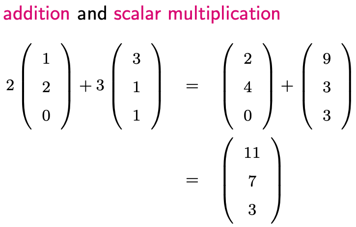
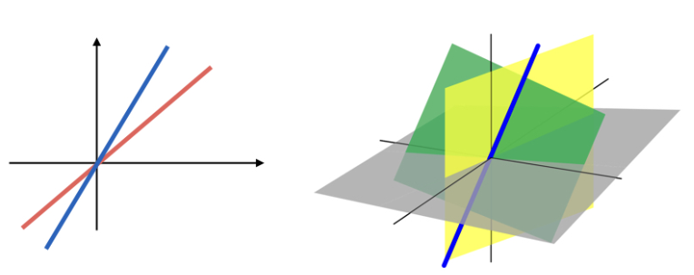
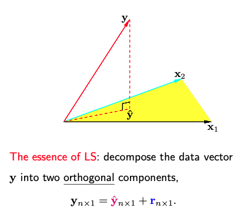

2.2. Geometric interpretation
The geometric interpretation of least squares doesn’t focus on the space in which the (p+1) dimensional feature vectors reside, where the feature vector includes the intercept. Therefore, it’s not advisable to utilize scatter plots to obtain geometric intuition.
Instead, the geometric interpretation focuses on the n-dimensional column vectors of the design matrix X and the n-dimensional data vector y.
2.2.1. Basic Concepts in Vector Spaces
First, let’s briefly revisit some foundational concepts in linear algebra.
Vectors: Vectors could be two-dimensional, three-dimensional, or more generally, n-dimensional. A vector can be visualized as a point in the corresponding space, or as an arrow originating at zero and pointing to that point. Vectors allow mathematical operations like addition and scalar multiplication. When you perform these operations on vectors from the same space, the result is also a vector from that space.
{kind=link}
Linear Subspace: This is an important concept in linear algebra. A linear subspace is a collection of vectors that remains closed under linear combinations. You can think of a subspace as a bag containing vectors. If you pick any two vectors u and v from this bag, any linear combination of them should also reside in the bag. It’s worth noting that u and v can be identical vectors. Consequently, a linear subspace always includes the origin since u-u = 0.
A key characteristic of a linear subspace is its dimension. If a linear subspace in \(\mathbb{R}^n\) has a dimension of m, then the following statements are true:
A basis can be found consisting of m vectors, and any vector within this subspace can be uniquely represented using these m basis vectors. However, it’s important to note that bases for a subspace are not unique; different sets of basis vectors can span the same subspace.
If there’s a subset of k vectors where k >m, then this set of vectors must be linear dependent; this means that at least (k-m) vectors can be expressed as linear combinations of others.
In \(\mathbb{R}^2\), linear subspaces are typically lines passing through the origin. In \(\mathbb{R}^3\), they could be lines (one-dimensional subspace) or planes (two-dimensional subspace) that pass through the origin.
{kind=link}
For regression analysis, we often deal with a special type of linear subspace known as the column space of the design matrix. Recall the p+1 columns of X, each being a vector in \(\mathbb{R}^n\). The column space, denoted by
contains vectors that can be expressed as a linear combination of the columns of X. In other words, any vector in C(X) can be represented as X times a coefficient vector.
2.2.2. LS and Projection
Now we can delve into the geometric interpretation of least squares. Consider the least squares optimization problem, where our objective is to find a linear combination of the columns of X so that the difference vector \(\mathbf{y} - \mathbf{X} \boldsymbol{\beta}\) has the smallest norm.
Let’s illustrate this geometrically, with the origin set at zero. Imagine y as a vector colored in red. For simplicity, assume that X has only two columns, X1 and X2. In this case, C(X), the column space of X, is a two-dimensional plane. This plane contains the yellow triangle in our illustration. Any point on this plane can be written as a linear combination of X, meaning that for every such point, there exists a corresponding beta. Conversely, for any beta, \(\mathbf{X} \boldsymbol{\beta}\) corresponds to a point on this plane.
{kind=link}
The least squares optimization problem is equivalent to finding a vector v on this plane so that the difference vector, stretching from y to v, attains the smallest norm. Intuitively, the optimal v is the projection of y onto the space C(X), the plane containing the yellow triangle.
What is this projection? Start from y, and move perpendicularly towards the yellow plane until you reach it. This point, denoted as y-hat, is the optimal choice for v.
While the mathematical intricacies have been skipped here, if matrix X is of full rank, given y-hat, one can easily compute the corresponding linear combination, beta-hat, which is the least squares solution.
This reveals the essence of least squares: it decomposes the n-dimensional data vector y into two orthogonal components:
The predicted values, y-hat, which is equal to \(\mathbf{X} \boldsymbol{\beta}\) lying within the column space of X.
The residual vector, r, which is equal to y - y-hat.
The two vectors, y-hat and r, are orthogonal to each other.
2.2.3. R-square: The Coefficient of Determination
The R-square value, often referred to as the coefficient of determination, is a statistical measure that represents the proportion of the variance for a dependent variable that is explained by the independent variables in a linear regression model.
Definition of R-square
The definition of R-squared is given by a ratio where the numerator represents the variance of the fitted values and the denominator represents the variance of the original data.
Note that since y = y-hat + r and the mean of the residual vector r is zero, the mean of y and the mean of y-hat are the same (i.e., y-bar). If we divide the numerator and denominator of the R-squared ratio by (n-1), it becomes clear that R-square equates to the variance of the fitted values (y-hat) relative to the variance of the original data (y). This understanding leads us to interpret R-square as the fraction of the variance in Y explained by X because y-hat is determined by X.
Geometric Interpretation
Visually, (y, y-hat, r) can be depicted as the three sides of a right triangle. This analogy holds even when we center our data, i.e., subtract the mean.
Using the Pythagorean theorem, the squared length of long side (y - ybar) equates to the sum of the squared lengths of the other two sides, y-hat - ybar and r.
These squared lengths correspond to:
Total sum of squares: squared length of (y - ybar).
Fitted sum of squares: squared length of (y-hat - ybar).
Residual sum of squares: squared length of r.
R-square can be alternatively expressed as FSS/TSS or (1 - RSS/TSS)
Additionally, R-square can be described as the squared correlation between y and y-hat in multiple linear regression, and between y and x in simple linear regression. This is why R-square values always lie between 0 and 1.
Invariance Properties of R-square
Any location or scale change in y won’t impact R-square. That’s because any modifications to y result in proportional changes in y-hat, ensuring correlations remain consistent and, in turn, R-square remains unaffected.
A Fun Result: In simple linear regression, the R-squared value remains the same whether X is used to predict Y or Y is used to predict X. This is due to the fact that in both scenarios, R-square represents the squared correlation between y and x.
Interpretation and Limitations
A high R-square value, like 70% or 80%, suggests a good fit. However, it doesn’t inherently validate the model’s efficacy. While a high value can suggest effective model fit, it’s not conclusive. One can artificially boost R-square by introducing more predictors, even irrelevant ones. This addition reduces the residual sum of squares, raising the R-square value.
Thus, while R-square is a useful metric, its interpretation should be approached with caution, especially concerning the number of predictors in the model. In light of these limitations, the concept of adjusted R-square is introduced:
2.2.4. Linear Transformation of X
When applying linear transformations to X, such as scaling or adding a location shift to a predictor, one might wonder how these alterations affect the least squares fit.
Let’s consider a general case where a new design matrix F is derived from the original matrix multiplied by a transformation matrix A:
As long as this transformation does not change the rank of the design matrix (which basically means that A is of full rank), we have \(X = F A^{-1}\). Then, it’s easy to show that any linear transformation of one matrix can be represented by a linear combination of the other.
Consequently, the column space of the new matrix is the same as the original one. So, the two linear subspaces are the same. Therefore, the projected y-hat, residual vector, and R-square are the same. However, the least square coefficient vector beta will be different because the underlying predictors have been changed.
So, what kind of transformation could change the rank of X? For example, instead of scaling up a predictor, say X2, by two, multiplying by zero would render it ineffective. Then, we lose the X2 direction and the two design matrices won’t share the same rank, leading to distinct least squares fits.
2.2.5. Rank Deficiency
If X is rank deficient (i.e., its rank is less than p+1), it implies that at least one of the columns (predictors) of X is redundant, meaning it can be expressed as a linear combination of the other columns.
Examples of Redundancy:
Suppose we have two predictors. One shows the size of a house in square feet, and the other shows the size of the house in square meters. They are perfectly related through units conversion. If both are included in the design matrix, one column becomes redundant.
Suppose we have three predictors, X1, X2, and X3, which measure the age distribution in a neighborhood: X1 is the percentage of the population above age 75; X2 is the percentage below age 18; and X3 is the percentage between these two ages. If we sum the percentages of these three age groups, it should total 100% or 1 when expressed as a proportion. This means that X1 + X2 + X3 = 1. Thus, a design matrix containing all three age-group predictors and an intercept will not be full rank.
When rank deficiency occurs, the LS formula \((\mathbf{X}^t \mathbf{X})^{-1} \mathbf{X} \mathbf{y}\) is inapplicable because \((\mathbf{X}^t \mathbf{X})^{-1}\) is not invertible. As noted earlier, the rank deficiency of the design matrix X indicates that one or more predictor (columns of X) can be represented as linear combinations of the others. This scenario causes a lack of a unique least squares solution for the coefficients beta. This non-uniqueness arises because we can adjust the weights (coefficients) of the linearly dependent predictors without changing the overall prediction. Consequently, there are infinitely many sets of beta values that could produce the same prediction values y-hat.
However, y-hat remains unique and well-defined, since the subspace spanned by the columns of X is well-defined.
Software packages and libraries handle rank deficiency differently.
R’s lm() function automatically detects rank deficiency in the design matrix. Upon detection, lm() drops one or more of the redundant columns to make the matrix full rank. Coefficients of these omitted columns are marked as NA, signaling their non-estimation due to collinearity. Substituting these NAs with zeros in the coefficient vector allows for standard prediction.
Python’s Scikit-learn returns coefficients with the minimum Euclidean norm (L2 norm) among all possible solutions. Typically, coefficients for all predictors are non-zero. This approach has connections to the way scikit-learn addresses the least squares problem in the context of rank deficiency: Python uses the Moore-Penrose pseudoinverse of X^t X when it’s singular; this approach, when applied to the normal equations, minimizes the Euclidean norm of the coefficient vector.
For instance, suppose you want to build a linear model predicting store sales at Walmart using ‘Year’ as a predictor, yet the training dataset only contains data from a single year (e.g., 2020), predicting sales for 2021 can yield different results between linear models from R and Python.
The minimum norm solution has some desirable properties, like being unique and stable with respect to small perturbations in the data, but it lacks sparsity. Conversely, R’s solution champions sparsity but isn’t unique. It consistently excludes redundant features listed last. Therefore, reshuffling predictor order can modify the solution.
In summation, rank deficiency in the design matrix X does not make the linear regression model invalid, but it does make the interpretation and estimation of the coefficients beta problematic. R and Python can detect and handle rank deficiency, but their treatments of rank deficiency are different.